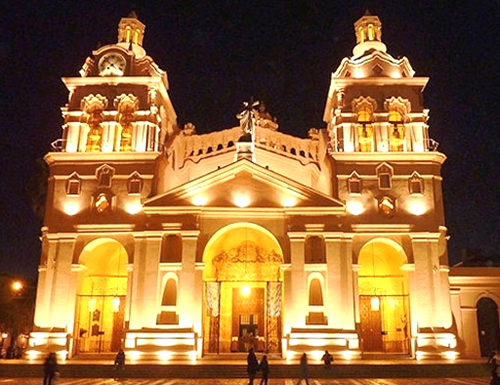
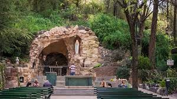
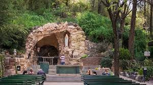
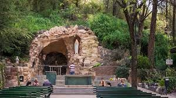

 


Hoteleria
Cordoba es una ciudad muy favorecida por su ubicacion en la que confluyen numerosos caminos convirtiendola en un centro de distribucion de bienes y personas en transito del resto de Argentina y paises limitrofes. Uno de sus atractivos mas grandes es la cercania con las Sierras lo que ofrece facilidad de acceso a los atractivos naturales que ofrece la provincia. Segun estadisticas Cordoba tiene la mayor concurrencia durante las epocas de Semana Santa, por su riquesa cultural
Nombre |
Destino Cercano |
Pagina Oficial - Informacion |
Ubicacion |
|
|---|---|---|---|---|
Hotel Mirasoles |
Camino Brocheriano |
Hace tu reserva |
||
Estancia La Paz |
Estancia Colonia Caroya |
Hace tu reserva | ||
El Colibri-Estancia de Charme |
Estancia Jesus Maria |
Hace tu reserva | ||
Hotel Boutique |
Estancia Santa Catalina |
Hace tu reserva |
||
Hotel Ritz |
Estancia Alta Gracia |
Hace tu reserva |
||
Alto del Carmen Hotel de campo |
Estancia La Candelaria |
Hace tu reserva |
/td> |  |
NH Panorama |
Manzana Jesuitica de la Ciudad de Cordoba |
Hace tu reserva |